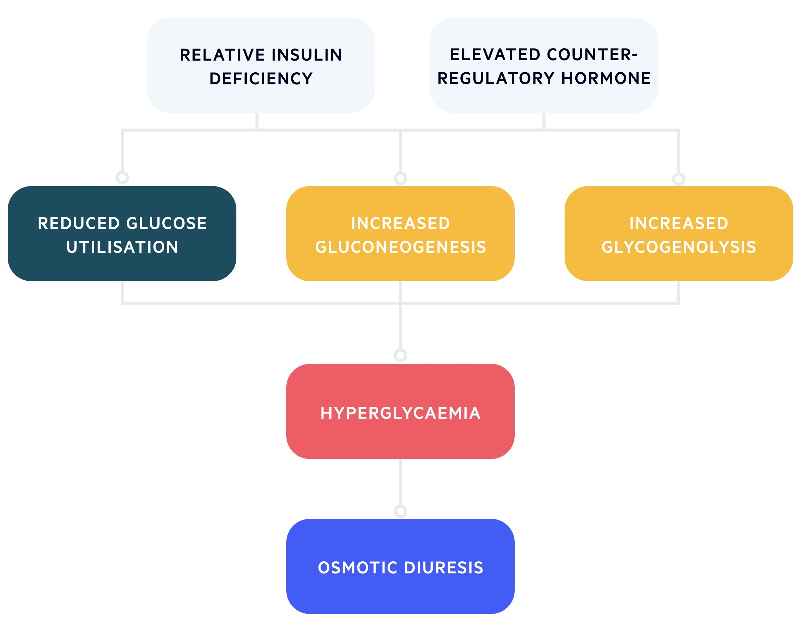

In HHS, the relative lack of insulin is coupled with a rise in counter-regulatory hormones (e.g. cortisol, growth hormone, glucagon) that leads to a profound rise in glucose.
These patients retain a certain level of insulin, which prevents the development of ketosis that epitomises DKA.
However, the level of insulin is inadequate to prevent profound hyperglycaemia.
The excessive glucose leads to massive osmotic diuresis within the kidneys with the loss of essential electrolytes such as sodium and potassium.
This is because the proximal tubules within the kidneys only have a certain capacity for reabsorption of glucose. Once this is reached, the remaining glucose is passed through the renal nephrons causing diuresis.
As water is lost, there is profound dehydration and reduced circulating volume, resulting in hyperosmolarity and marked hyperglycaemia.
Patients with HHS may have up to a 9 litre deficit of water.
Increased osmolality triggers compensatory mechanisms (ADH release and thirst), but if these cannot compensate (e.g. elderly patients with co-morbidities),
hypovolaemia develops with progression to acute kidney injury, electrolyte disturbances, hypotension and coma.
The hyperosmolar state leads to hyperviscosity, increasing the risk of arterial and venous thrombosis (e.g. stroke, DVT).
HHS pathophysiology
